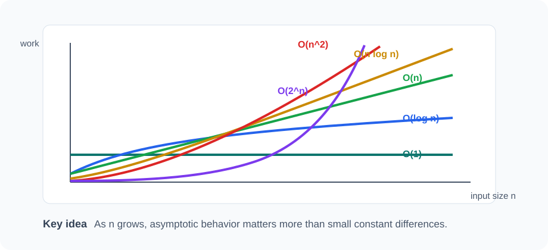

Lesson 2
Time Complexity and Asymptotic Bounds
This lesson builds algorithm analysis from the math side: functions, growth rates, upper bounds, lower bounds, and tight bounds. The point is to predict scalability before running code.

Example first: duplicate detection
Given an integer array, return whether any value appears at least twice. Here are two correct solutions.
Problem
Contains Duplicate. Given an integer array nums, determine whether any value
occurs at least twice.
- Input: An integer array, which may be empty.
- Output: Return
truewhen a duplicate exists; otherwise returnfalse. - Constraints: Do not change the input array.
Example: [4, 1, 7, 4] returns true;
[4, 1, 7] returns false.
static boolean hasDuplicateSlow(int[] nums) {
for (int i = 0; i < nums.length; i++) {
for (int j = i + 1; j < nums.length; j++) {
if (nums[i] == nums[j]) return true;
}
}
return false;
}static boolean hasDuplicateFast(int[] nums) {
HashSet<Integer> seen = new HashSet<>();
for (int x : nums) {
if (seen.contains(x)) return true;
seen.add(x);
}
return false;
}Both are logically correct. The difference is growth. The slow method compares pairs. The fast method scans once and uses a set for membership.
From code to a cost function
Time complexity starts by turning code into a function. Let n be the input length. For the nested
loop version, the number of comparisons is:
(n - 1) + (n - 2) + ... + 2 + 1
= n(n - 1) / 2
= 0.5n^2 - 0.5nWe do not usually care about the exact constants. We care that the dominant term is quadratic. That tells us what happens as n grows.
Asymptotic notation
Asymptotic notation describes growth for large inputs. It deliberately ignores machine speed, programming language overhead, and small constants.
| Notation | Meaning | Informal reading |
|---|---|---|
| O(g(n)) | Asymptotic upper bound | The function grows no faster than g(n), up to constants. |
| Ω(g(n)) | Asymptotic lower bound | The function grows at least as fast as g(n), up to constants. |
| Θ(g(n)) | Tight bound | The function grows like g(n), up to constants. |
Many classes teach Big-O first because it is the most common in everyday programming. But Big-O alone is only
an upper bound. Saying a method is O(n^2) does not prove it is not also O(n^3). For precision, we often want
Θ.
Formal intuition without overloading the math
We say f(n) is O(g(n)) if there are positive constants c and
n0 such that for every n >= n0, f(n) <= c * g(n).
In plain English: after some point, g(n) times a constant is always above f(n).
3n + 10 is O(n), because 3n + 10 <= 4n for all n >= 10.
3n + 10 is also Θ(n), because it is both O(n) and Ω(n).
Growth-rate hierarchy
The following order appears constantly in algorithms:
1 < log n < sqrt(n) < n < n log n < n^2 < n^3 < 2^n < n!| Class | Typical source | Example |
|---|---|---|
| O(1) | Direct access | a[i], stack push |
| O(log n) | Repeated halving | Binary search |
| O(n) | Single scan | Find max in an array |
| O(n log n) | Divide and conquer with linear combine | Merge sort |
| O(n^2) | All pairs | Compare every pair |
| O(2^n) | All subsets | Backtracking subset generation |
Why lower bounds matter
A lower bound tells us that no algorithm in a certain model can do better than a given amount of work. For example, finding the maximum value in an unsorted array has a lower bound of Ω(n). Why? In the worst case, if the algorithm never looks at one element, that unseen element could be the maximum.
Therefore, the simple scan is not just O(n). It is Θ(n), and it is optimal for an unsorted array.
static int max(int[] a) {
int best = a[0];
for (int i = 1; i < a.length; i++) {
if (a[i] > best) best = a[i];
}
return best;
}Loop analysis patterns
Separate loops add
for (int i = 0; i < n; i++) workA();
for (int j = 0; j < n; j++) workB();The cost is n + n = 2n, so the complexity is Θ(n).
Nested loops multiply
for (int i = 0; i < n; i++) {
for (int j = 0; j < n; j++) {
work();
}
}The cost is n * n, so the complexity is Θ(n^2).
Triangular loops use sums
for (int i = 0; i < n; i++) {
for (int j = i + 1; j < n; j++) {
work();
}
}
The work is (n - 1) + (n - 2) + ... + 1, which is n(n - 1)/2. The complexity is
Θ(n^2), even though the inner loop does not always run n times.
Halving loops are logarithmic
int x = n;
while (x > 1) {
x = x / 2;
}
After k iterations, x is roughly n / 2^k. The loop stops when
n / 2^k <= 1, so k >= log2(n). Complexity: Θ(log n).
Best case, worst case, average case
Complexity can describe different scenarios. For contains on an array:
static boolean contains(int[] a, int target) {
for (int x : a) {
if (x == target) return true;
}
return false;
}| Case | When | Cost |
|---|---|---|
| Best case | Target is first | Θ(1) |
| Worst case | Target is last or missing | Θ(n) |
| Average case | Assume target position is random | Θ(n) |
Unless otherwise stated, algorithm courses usually care about worst-case complexity because it gives a guarantee.
Calculus idea: using integrals to estimate sums
Many algorithms produce sums that are not as simple as 1 + 2 + ... + n. When a sum is hard to
evaluate exactly, we can often compare it to an integral. This is one reason calculus is useful in algorithm
analysis.
For an increasing positive function f(x), the sum f(1) + f(2) + ... + f(n) is often
close to the area under the curve f(x). We do not need the exact value; we need the growth rate.
sum from i = 1 to n of log(i)
≈ integral from 1 to n of log(x) dx
= n log(n) - n + 1
= Θ(n log n)
This means log(1) + log(2) + ... + log(n) grows like n log n. This sum appears when
analyzing products, factorials, heap operations over many inserted elements, and some sorting arguments.
1 + 1/2 + 1/3 + ... + 1/n = Θ(log n). The integral of 1/x is log x.
log(1) + ... + log(n) = Θ(n log n). This is also log(n!).
If you remembered something like O(n log n) being "the same as" another expression, it may have
been one of these facts: log(n!) = Θ(n log n), or Σ log i = Θ(n log n). These are
not equal as exact functions, but they have the same asymptotic growth.
Recurrences: algorithms that call themselves
Recursive algorithms often lead to recurrence relations. A recurrence describes the cost of solving a problem in terms of smaller problems.
Merge sort is the classic example. It splits the array into two halves, recursively sorts both halves, then merges them in linear time.
MERGE-SORT(a):
if a has length 0 or 1:
return a
split a into left and right
sortedLeft = MERGE-SORT(left)
sortedRight = MERGE-SORT(right)
return MERGE(sortedLeft, sortedRight)T(n) = 2T(n/2) + Θ(n)
The 2T(n/2) term means two recursive calls on half-size inputs. The Θ(n) term is the
merge work done after recursion.
Recursion tree method
Before using formulas, draw the work by levels. For merge sort:
Level 0: n
Level 1: n/2 + n/2 = n
Level 2: n/4 + n/4 + n/4 + n/4 = n
...
Number of levels: log2(n)
Total work: n per level * log n levels = Θ(n log n)
This method is often more intuitive than memorizing a theorem. It also helps students understand where
n log n actually comes from.
Master Theorem
The Master Theorem is a shortcut for many divide-and-conquer recurrences of this form:
T(n) = aT(n/b) + f(n)
Here, a is the number of subproblems, n/b is the size of each subproblem, and
f(n) is the non-recursive work done at each call.
| Comparison | Result | Intuition |
|---|---|---|
f(n) is smaller than n^(log_b a) |
T(n) = Θ(n^(log_b a)) |
Leaves dominate |
f(n) = Θ(n^(log_b a)) |
T(n) = Θ(n^(log_b a) log n) |
Every level contributes about the same |
f(n) is larger than n^(log_b a) |
T(n) = Θ(f(n)) |
Root work dominates, with a regularity condition |
Examples
| Recurrence | Analysis | Result |
|---|---|---|
T(n)=2T(n/2)+n | n^(log_2 2)=n, equal case | Θ(n log n) |
T(n)=T(n/2)+1 | n^(log_2 1)=1, equal case | Θ(log n) |
T(n)=2T(n/2)+1 | n^(log_2 2)=n, leaves dominate | Θ(n) |
T(n)=3T(n/2)+n | n^(log_2 3) ≈ n^1.585, leaves dominate | Θ(n^1.585) |
T(n)=T(n/2)+n | n^(log_2 1)=1, root dominates | Θ(n) |
The theorem is useful, but it is not magic. If the recurrence does not match the form, use recursion trees, substitution, or another method.
Probability idea: expected runtime
Some algorithms use randomness. For these, worst-case analysis may be too pessimistic, while expected analysis captures what happens on average over the algorithm's random choices.
Expected value is a weighted average:
E[X] = sum over outcomes of probability(outcome) * value(outcome)
A powerful rule is linearity of expectation: E[X + Y] = E[X] + E[Y], even when X and Y are not
independent. This rule makes randomized quicksort analysis surprisingly elegant.
Randomized quicksort: why the expected time is O(n log n)
Quicksort chooses a pivot, partitions the array into smaller and larger elements, then recursively sorts both sides.
QUICKSORT(a, lo, hi):
if lo >= hi:
return
pivotIndex = random index between lo and hi
move pivot to the end
p = PARTITION(a, lo, hi)
QUICKSORT(a, lo, p - 1)
QUICKSORT(a, p + 1, hi)
Worst case is Θ(n^2), such as repeatedly choosing the smallest or largest pivot. But if the pivot
is chosen uniformly at random, the expected time is Θ(n log n).
High-level recurrence intuition
A "good" pivot splits the array reasonably, for example between the 25th and 75th percentile. A random pivot has constant probability of being good. We expect to get enough good splits to keep recursion depth logarithmic, while each level still does linear partitioning work.
Pairwise comparison intuition
Another beautiful analysis counts expected comparisons. Consider two sorted-order elements x_i
and x_j. They are compared only if one of them is chosen as the first pivot among the elements
between them. The probability of that is:
Pr[x_i and x_j are compared] = 2 / (j - i + 1)Summing this probability over all pairs gives:
Expected comparisons
= sum over all i < j of 2 / (j - i + 1)
= Θ(n log n)This is an advanced result, but the lesson is simple: randomness can protect an algorithm from consistently bad structure in the input.
Java example: randomized pivot
static void quickSort(int[] a) {
Random rng = new Random();
quickSort(a, 0, a.length - 1, rng);
}
static void quickSort(int[] a, int lo, int hi, Random rng) {
if (lo >= hi) return;
int pivotIndex = lo + rng.nextInt(hi - lo + 1);
swap(a, pivotIndex, hi);
int p = partition(a, lo, hi);
quickSort(a, lo, p - 1, rng);
quickSort(a, p + 1, hi, rng);
}
The implementation details of partition will be covered in the sorting lesson. Here the key point
is analytical: randomized pivot choice changes the expected behavior.
From math to Java: choosing a better data structure
If we perform one membership query, scanning an array may be fine. If we perform many membership queries, we can preprocess the data into a set.
Problem
Count Matching Queries. Given integer arrays values and queries,
count how many query entries occur in values.
- Input: A collection of values and a sequence of membership queries.
- Output: Return the number of matching query positions.
- Constraints: Count repeated queries independently.
Example: values = [2, 5, 8] and
queries = [5, 5, 7, 8] return 3.
static int countMatches(int[] values, int[] queries) {
HashSet<Integer> set = new HashSet<>();
for (int x : values) set.add(x);
int count = 0;
for (int q : queries) {
if (set.contains(q)) count++;
}
return count;
}
If values.length = n and queries.length = m, the expected time is
O(n + m). Without the set, the naive nested search would be O(nm).
Analysis routine
ANALYZE(code):
1. Define input sizes, such as n, m, V, or E.
2. Identify the basic operation: comparison, lookup, insertion, edge visit.
3. Count how many times the operation runs.
4. Convert sums or products into a growth function.
5. If recursion appears, write a recurrence.
6. Use a recursion tree, Master Theorem, or substitution.
7. State upper bound O(...).
8. If possible, state lower bound Ω(...).
9. If they match, state tight bound Θ(...).
10. Mention assumptions, such as expected O(1) HashSet operations.Practice examples
- Prove that scanning an unsorted array to find max is Θ(n).
- Analyze a loop where
idoubles each time. - Compare duplicate detection using nested loops vs
HashSet. - Write the cost function for a triangular nested loop.
- Explain why sorting with comparison-based algorithms has an Ω(n log n) lower bound at a high level.
- Use an integral to explain why
1 + 1/2 + ... + 1/n = Θ(log n). - Solve
T(n) = 2T(n/2) + nusing a recursion tree. - Use the Master Theorem on
T(n) = 3T(n/2) + n. - Explain why randomized quicksort has bad worst-case time but good expected time.